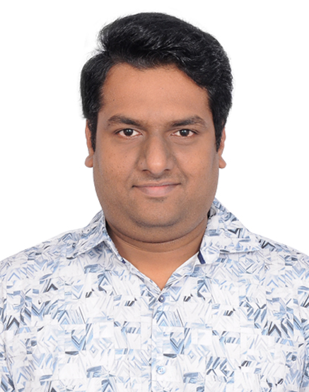

Ramkumar A
Registered Structural Engineer Grade – II (CMDA)
Email ID: structural.ram@gmail.com
Phone No.:+919677133654

Summary
Hands-on design engineer with 4 Years of experience and a proven track record of delivering reliable projects
in a variety of areas, such as water retaining structure, onshore marine structure, residential & commercial
structures
Equipped with a solid foundation on reinforced concrete & steel structures and passion for designing complex
problem, I am to contribute my technical skills and collaborate with a dynamic team to develop innovative
solutions while to gaining valuable industry experience.
Core Skills
- Proficient in AutoCAD Civil 3D, Bentley Watergem & Sewergems Modelling.
- Expertise in Staad Pro, Etabs, Midas Civil, RCDC
- Knowledge of Building Codes & Standards – IS 456, IS 800, IS 1893, IS 2911, IS 3370, IRC 6,
EUROCODE EN1992-1-1
Experience
- ECT Infra Solution Pvt Ltd
Duration: September 2023-October 2023
Designation: Design Engineer
- Providing Underground Sewerage System Network to Sivakasi City Municipality Corporation-Designed a Collection System covering over 19.89 Sq.km in compliance with CPHEEO
Manual
- Improvements to existing water supply scheme for Kancheepuram city municipal corporation-Designed a Distribution System covering over 36.14 Sq.km in compliance with 24x7 Water
Supply Scheme (MHUA)
- Providing UGSS to Added Area of Kancheepuram City Municipal Corporation-Designed a Collection System covering over 24.24 Sq.km in compliance with CPHEEO
Manual.
- Struct House India Pvt Ltd.
Duration: October 2021-December 2022
Designation: Design Engineer
- Improvement of Water Supply Improvement Works – AMRUT 2.0 – Municipal Corporation- Designed a Distribution System for Aranthangi, Bhavani, Kulithalai, Sathyamangalam
- Vetting of G+6 Residential Building at Royapettah, Chennai – Agarwal Architect- Vetted Residential building Using Staad Pro & cross check with in-house design sheet as
per IS 456, IS 1893
- Preliminary Analysis and Design of Mono Pile for Four Lane Elevated Urban Corridor for A Span
Of 30.00m PSC Box Girder - Government of Tamil Nadu - Highways Department-Preliminary design, vetted from CMRL authorities & IIT Madras using Adsec & Midas
Civil software as per IRC codes.
- Linking Shanmugam Salai with Km 26/2 of Grand Southern Trunk Road including junction
improvements and extending pedestrian subway, Construction of Subway at Km 26/6 of Grand Southern Trunk Road for linking East Tambaram with Tambaram Mudichur road and formation of
service road - Government of Tamil Nadu - Highways Department- Designed subways & pumping station with storm water collection tank as per IRC codes.
- Proposed Industrial Facility - Casa Grande Distri Park-Designed industrial building & office building (G+1) as per IS 800 & IS 456.
- Preparation of Detailed Project Report for the Junction Improvement at GST road, GWT road and
IRR road in Chennai City - Government of Tamil Nadu - Highways Department-Designed Steel Pedestrian Bridges, pump house – 12m x 9m
- IIT Madras – Ocean Engineering Dept.
Duration: September 2019-April 2021
Designation: Project Associate
- Integrated Fire Fighting Facilities in compliance with OISD-156 standard for Outer Terminal-II (OTII) and augmentation of Fire Fighting Facilities in HOJ-I, HOJ-II, Barge Jetty-I & II - Syama Prasad
Mookerjee Port Haldia-Designed of pipe carrying bridge of 70m length, pump house – 15m x 9m
- Project Monitory of the work repairing of concrete structure of lead in jetty at lock entrance, Haldia,
HDC (phase II) - Syama Prasad Mookerjee Port Haldia
- Construction of Liquid Cargo Handling Jetty (Outer Terminal - II) Near 2nd Oil Jetty On The River
Hooghly At Haldia Dock Complex, Kolkata Port Trust (Jetty Structure Including Escape Route) -
Syama Prasad Mookerjee Port Haldia-Designed Berthing & Mooring Dolphin of 50000 DWT Liquid Cargo & Loading Platform
- Retrofitting of Grab Crane Pedestal with Strengthening of slab in the fixed loading platform at
HFPTL, Haldia Dock Complex, Kolkata Port Trust, Haldia – Bothra Shipping Services Private
Limited, Syama Prasad Mookerjee Port Haldia
- Design for Development of ship repair facilities for ICG at Ratnagiri, Maharashtra, India. - Indian
Coast Guard-Designed Assembly Hall, Fire Dept. office, Administration Building, Storage shed
- Extension and Construction of Rubble Mound Breakwater both in north and south side of entrance
channel, construction of coastal berth 1 and berth 2, and capital dredging at Cuddalore - Tamil Nadu
Maritime Board-Designed Wharf structure of 120m x 40m with friction pile of 32.00m depth
Eduction
- College Name:Sathyabama Institute of Science & Technology, Chennai
Duration:2017-2019
Degree:Master of Engineering in Structural Engineering
CGPA8.72
- College Name:Jeppiaar SRR Engineering College, Chennai (Affiliated to Anna University)
Duration:2013-2017
Degree:Bachelor of Engineering in Civil Engineering
CGPA7.18